Sympathetic Pathway
-
First-order neuron
- Starts in the hypothalamus, sends axons through the brainstem and upper spinal cord, synapsing in the intermediolateral cell column in the first thoracic cord segment
-
Second-order neuron
- Starts in the spinal cord, sends a signal through the paraspinal region and lung apex, synapsing on the superior cervical ganglion at the bifurcation of the common carotid artery
-
Third-order neuron
- Starts in the superior cervical ganglion, sends axons along the wall of the internal carotid artery, passing along the middle ear promontory, carotid canal, and cavernous sinus, where it resides next to the internal carotid artery in the middle of the venous sinus
- Axons enter the orbit with the nasociliary nerve and long ciliary nerves to the iris dilator muscle and upper lid elevator Muller muscle
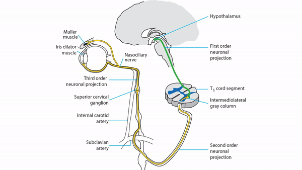
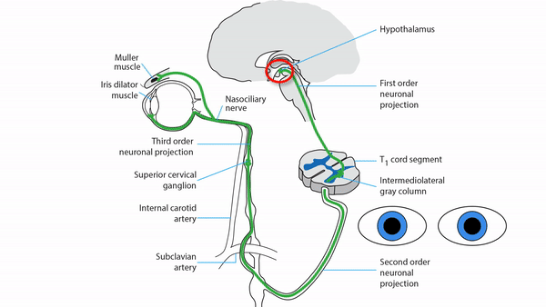
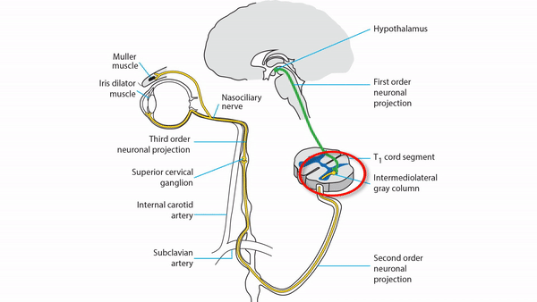
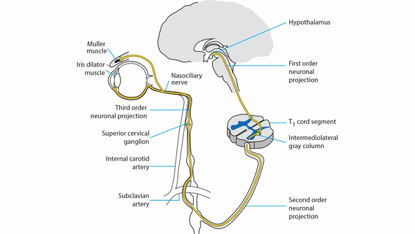
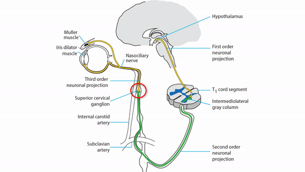
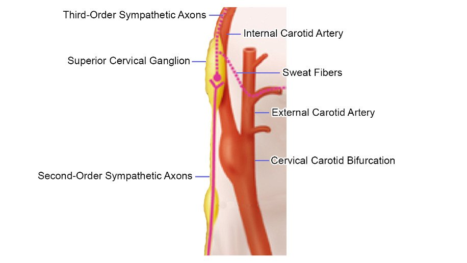
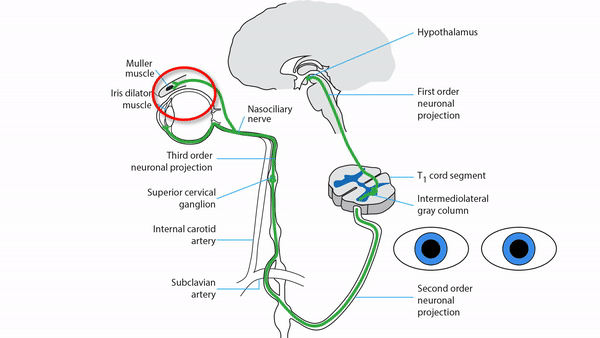
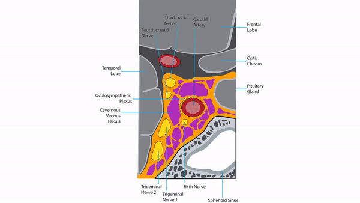
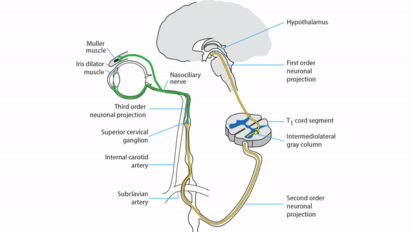
-
Lesion of the first-order neuron
- Produces ipsilateral ptosis, miosis, and hemibody hypohydrosis (Horner syndrome)
- Commonest cause is dorsolateral medullary infarction (Wallenberg syndrome) but a hypothalamic lesion may be implicated
-
Lesion of the second-order neuron
- Produces ipsilateral ptosis, miosis, and facial hypohydrosis (Horner syndrome)
- Commonest causes are spinal cord and thoracic lesions
-
Tip: Horner syndrome may be an isolated clinical abnormality in second-order neuron lesions
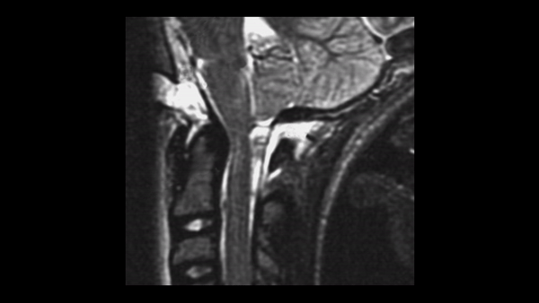 -
Lesion of the third-order neuron
- Produces ipsilateral ptosis and miosis, but no hypohydrosis (incomplete Horner syndrome), as sweat fibers split off at the carotid bifurcation to travel with the external carotid artery
- Commonest causes are neck tumors, neck trauma, and carotid dissection
-
Tip: Horner syndrome may be an isolated clinical abnormality in third-order neuron lesions; however, listen for ipsilateral neck or face pain from carotid dissection
-
Trap: Horner syndrome does not arise from an orbital lesion!
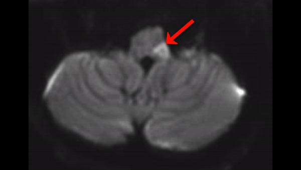
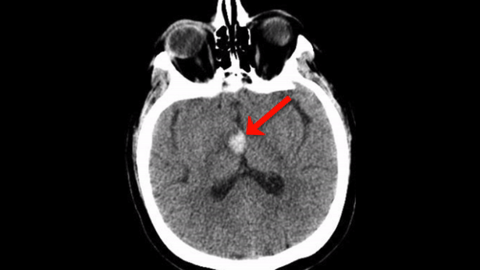
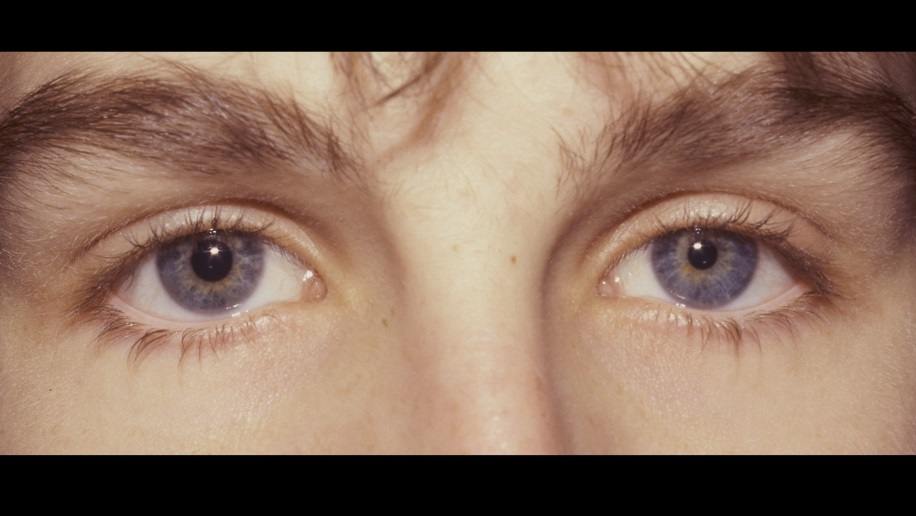
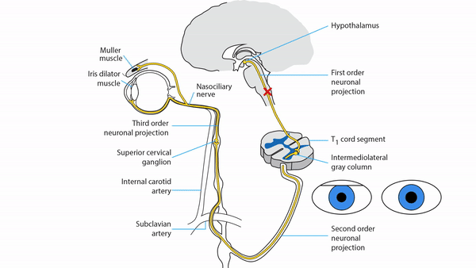
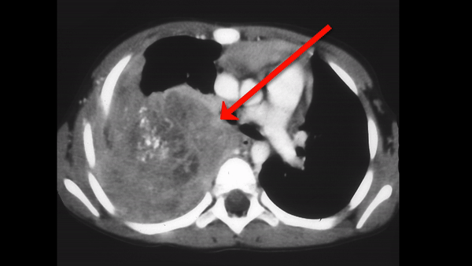
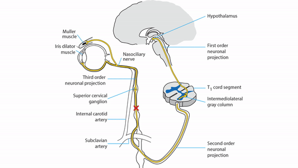
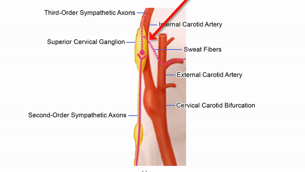